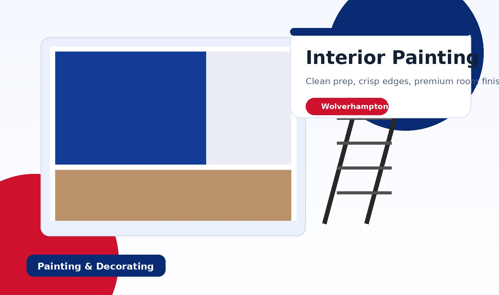

✓
Reliable communication
Straightforward enquiries, clear quoting, and a simple booking process that feels easy for the customer.
This website positions the business as dependable and professional without making it feel cold or corporate. That matters for a solo decorator, because trust and first impressions are everything.

People do not just want paint on a wall. They want a decorator who communicates clearly, turns up properly, and leaves a clean result behind.
Straightforward enquiries, clear quoting, and a simple booking process that feels easy for the customer.
Strong focus on filling, sanding, priming, and surface prep so the final finish looks better and lasts longer.
The site repeatedly reinforces neat work, clean edges, and rooms or properties customers are proud to show off.
This site is already positioned to look trustworthy and convert interest into enquiries. The last step is to publish it and connect the form.